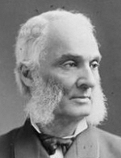

|

|

|
|
|
Robert Purvis was an African-American abolitionist and reformer, best
known for his work in helping slaves escape to freedom. As a consequence
of these activities, the New York Times dubbed him the "President
of the Underground Railroad."
Purvis was born in 1810 in Charleston, South Carolina, to a white
cotton merchant, William Purvis, and a mixed race mother, Harriet Judah.
His maternal grandmother, Dido Badaracka, was a first generation African
from Morocco. Light-skinned, Purvis could have passed for white but
chose to identify as black, a move that decisively shaped his life's
concerns. His father moved the family to Philadelphia in 1819, where
Robert attended the Clarkson Institute, a school for free blacks founded
by the Pennsylvania Abolition Society. He completed his education at
Amherst Academy in Massachusetts. In 1831, he married Harriet Davy
Forten, daughter of James Forten, a prominent African-American
businessman and activist. Harriet became his partner in anti-slavery and
other reform efforts. An astute businessman, Robert Purvis accumulated a
good deal of wealth during his lifetime, and frequently lent money to
organizations and individuals in Philadelphia's free black community.
A lifelong opponent of slavery, Purvis became involved in
anti-colonization efforts in the early 1830s. He met William Lloyd
Garrison in 1830 and was an early financial backer of The
Liberator, Garrison's radical abolitionism newspaper, and one of
three black founding members of the American Anti-Slavery Society in
1833. Purvis adopted Garrison's call for immediate abolition of slavery,
as well as his stance on women's equality. Over time, he served as a
member of the Society's Board of Managers (1833-1840), as Vice President
(1841-1865) and as an Executive Committee member (1865-1870). He was
also a founding member of both the Philadelphia Anti-Slavery Society and
Pennsylvania Anti-Slavery Society, and the first African American
nominated for membership in the otherwise all-white Pennsylvania
Abolition Society.
Following the example of David Ruggles in New York, Purvis founded
the Vigilant Association of Philadelphia in 1837, to "create a fund to
aid colored persons in distress." The Association quickly formed a
committee to secretly assist those fleeing slavery. The committee served
as a training ground for other young abolitionists, including William
Still, who later chronicled his work in Underground Rail Road: A
Record of Facts, Authentic Narratives, Letters, etc. (1872).
Although Purvis destroyed most of the documents of the organization
after the passage of the 1850 Fugitive Slave Law, some record of its
activities survives in the form of a minute book held at the Historical
Society of Pennsylvania, as well as reports to the Philadelphia Female
Anti-Slavery Society. Later in life, Purvis recollected that the
Committee assisted an average of one fugitive a day during its
operations, including Harriet Jacobs, author of Incidents in the Life
of a Slave Girl (1861).
Known for his fiery oratory, Purvis was a frequent speaker at
anti-slavery conventions, where he was critical of the U.S. government
and its treatment of African Americans. Throughout his life he remained
angry and dismayed at the continuing denial of black civil and human
rights. Purvis often eschewed "complexional" organizations unless it was
intrinsic to mission, as in the case of vigilance work, and actively
forged relationships with white anti-slavery and other reform activists,
notably Lucretia and James Mott. Believing that there was "but one race,
the human race," Purvis linked the black struggle for equality with that
of women, American Indians, and Irish nationalists demanding home rule.
He was alone among black men in his opposition to passage of the
Fifteenth Amendment. Angry that it did not include women, he declared,
"If need be, I would prefer to bide my time for twenty years before I
shall deposit a ballot, if at that time I may be allowed to take my wife
and daughter with me to the ballot box."
After the Civil War, Purvis broke with William Lloyd Garrison over
the end of the American Anti-Slavery Society, maintaining that until
African Americans had suffrage and equality, the work of the
organization continued. The two were reconciled shortly before
Garrison's death in 1879. Toward the end of his career, Purvis served
briefly as a commissioner of the Freedman's Savings Bank, where he
oversaw the dismantling of branches and sought, unsuccessfully, to
protect the investments of small black investors. After the death of his
wife Harriet in 1875, Purvis married Taci Townshend, an English-born
poet and reformer. He died in 1898, the last surviving founder of the
American Anti-Slavery Society.
Source: Christopher Bates, ed. The Encyclopedia of the Early
Republic and Antebellum America (Armonk, NY: M.E. Sharpe, 2010), 856-857.
|